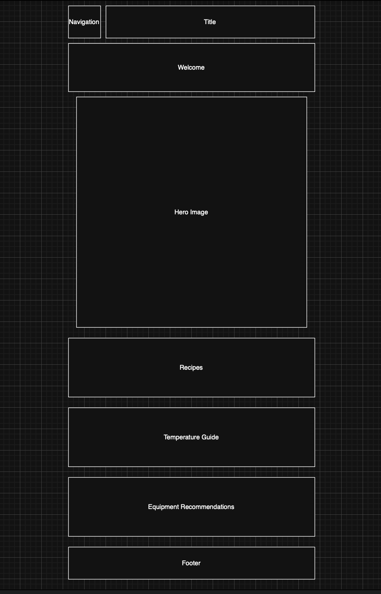
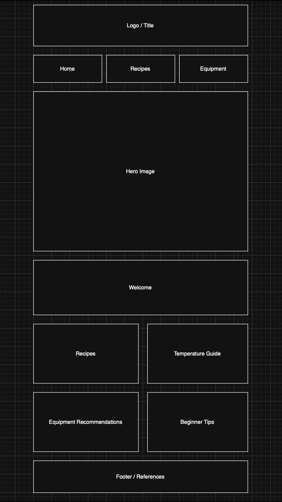

Site Name
The Pellet Smoker Resource Guide: Made Simple
This name was chosen because the site is designed to make pellet smoking easier by providing tips, selected recipes, temperature guidance, and equipment recommendations.
Site Purpose
This website will help users learn pellet smoker tips, preferred recipes, cooking temperatures, and equipment recommendations.
Scenarios
- What pellet smoker should I buy?
- What pellet smoker options or accessories are helpful for beginners?
- What temperature should I use when smoking a pork shoulder?
- Is there a difference in wood pellets?
Color Schema
Primary color: Grilled (#61422d) for headings and navigation.
Secondary color: Portobello Mushroom (#9b8f87) for buttons and navigation.
Typography
Headings: Kaushan Script
Body text: Roboto
Wireframes

